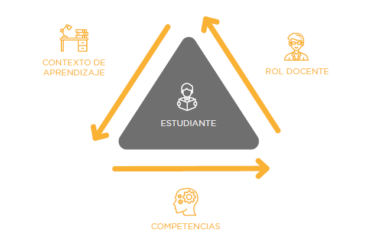

Consideraciones previas
La decisión que adopte la universidad con respecto a la plataforma, entorno virtual de aprendizaje o LMS, debe brindar al estudiante una ruta de aprendizaje ordenada, en continua relación con el docente, los recursos y materiales y con su grupo o clase.
En el caso de la UNSA, la elección de plataforma de entorno de aprendizaje virtual o LMS es el Moodle. Las entidades que gestionan y controlan el LMS son: DUTIC (Dirección Universitaria de Tecnologías de la Información y Comunicaciones) y OUIS (Oficina Universitaria de Informática y Sistemas).
En este sentido, el término aprendizaje virtual debe organizar y ha de favorecer tres ejes:

Como tal, ese proceso hace referencia a un concepto que parte de la idea de un aprendizaje virtual, que fomenta e impulsa el pensamiento crítico, la exploración y creación de aprendizaje a partir de la propia experiencia.
Según Barbera, 2008, la comunicación en el triángulo interactivo profesor – estudiante – contenidos promueve la construcción de conocimiento por parte de los aprendices (Hennig y Escofet, 2015).

Figura. Modelo centrado en el estudiante y orientado al desarrollo de competencias.
Fuente: Adaptado de González y Wagenaar (2003) y Hernández-Escolano (2016)